Web Junk
Fique Mais
github.com/DanielGoulartS/
https://github.com/DanielGoulartS/FIQUE-MAIS
Tópicos:
Introdução
Objetivo Geral
Motivação
Tecnologias
Desenvolvimento
Sistema Proposto
Arquitetura
Para Nerds. (Sobre os arquivos)
Requisitos Funcionais
Reproduzir Música no Sistema Proposto
Diagramas
Casos de Uso
Diagramas de Sequência
Objetivo Geral:
Criar uma página WEB de entretenimento que simule uma gincana que consiste em manter o usuário mais tempo possível na página enquanto ouve uma música repetitiva.
Motivação:
Doja Cat.
Tecnologias:
PHP, Javascript, HTML, CSS, Wamp Server, MySQL(PHPMyAdmin).
O Sistema Proposto:
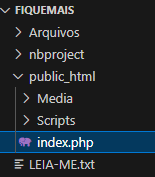
Quando o usuário clica na área indicada a música é reproduzida infinitamente e uma contagem de tempo é iniciada e exibida para o usuário. O usuário tem acesso a um campo de texto para inserir seu apelido, que se já estiver contido no ranque da página será impedido de enviar pelo filtro do sistema, caso contrário ficará disponível para ser alocado no ranque se estiver entre os maiores tempos registrados.
Arquitetura:
O sistema trabalha no modelo Cliente-Servidor.
O usuário acessa o site através de sua máquina cliente, o site opera um banco de dados do servidor registrando tempos e usuários, apagando usuários com menos pontos, e enviando novamente estas informações a cada novo acesso à página.
[DIAGRAMA DE ARQUITETURA]
O Sistema Proposto trata-se de um Sistema WEB PHP que se utiliza da propriedade do “index.php” de ser interpretado como arquivo raiz pelos navegadores.
O sistema está organizado para aplicação direta em servidores, portanto possui a pasta public_html que contém os arquivos que serão acessíveis pelo público e interpretados pelos seus navegadores como a página index, os arquivos de mídia e os scripts, já outras pastas externas à public_html serão exclusivas do servidor e nunca acessadas diretamente.
A pasta public_html contém:
O arquivo index.php;
A pasta Media com os arquivos de mídia (Imagens e Audio);
A pasta Scripts com os scripts de Javascript que serão chamados pelo HTML para a montagem do código da página que será entregue e interpretada pelo cliente.
/* |
|
PARA NERDS: |
|
O Index.PHP |
O arquivo index.php contem as consultas que serão executadas na base de dados, e também amarra a lógica PHP à montagem da estrutura HTML e à conexão da base de dados chamando os demais arquivos PHP que gerem estas funções. Estes são: |
|
|
|
|
Connection.php |
Este arquivo controla o acesso a uma base de dados (apenas MySQL) uma vez que todos os dados de conexão são variáveis que podem e devem ser alteradas no início de qualquer publicação ou manipulação desta aplicação visando seu pleno funcionamento. |
|
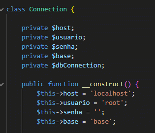 |
Dentro do construtor, substituindo os valores de ‘host, usuario, senha e base’ pelos valores da conexão ao seu servidor SQL você deve ter uma conexão bem sucedida com sua base de dados, e quaisquer erros encontrados não devem ser oriundos de conexão. |
Possíveis erros acontecerão se sua base de dados não estiver iniciada, ou não tiver a tabela ‘ranq’ criada e preenchida, neste caso execute o script FiqueMais.sql em seu servidor MySQL. |
O script FiqueMais.sql pode ser encontrado na pasta do Sistema acompanhado do LEIA-ME.txt. |
|
FiqueMais.php |
Este arquivo tem a marcação HTML e requer o arquivo FiqueMaisCSS.php que é responsável pelo CSS e estilização da página, bem como uma estrutura de repetição ao fim dá página que permite a exibição do ranque de jogadores. |
|
FiqueMaisCSS.php |
Este arquivo possui apenas a chamada de estilização da página. Sua função é arcar puramente com o CSS da aplicação, mas utiliza-se das propriedades do PHP para retornar resultados dinâmicos de paletas de cores para os usuários a cada requisição. |
*/ |
Requisitos Funcionais:
RF (Requisito Funcional):001
REQUISITO: Reproduzir Música.
DESCRIÇÃO: O Sistema deverá reproduzir uma música quando for acionado pelo usuário.
PRIORIDADE: Alta.
UC (Use Case): 001
-------------------
Requisitos Funcionais:
RF (Requisito Funcional):002
REQUISITO: Contar Tempo.
DESCRIÇÃO: O Sistema deverá reproduzir um cronômetro junto à música.
PRIORIDADE: Alta.
UC (Use Case): 002
-------------------
RF (Requisito Funcional):003
REQUISITO: Registrar Usuário.
DESCRIÇÃO: O Sistema deverá registrar o usuário que preencher o formulário e passar mais tempo na gincana do que, pelo menos, o menor tempo registrado bem como excluir todo e qualquer tempo menor que o 5º (quinto) maior registrado.
PRIORIDADE: Alta.
UC (Use Case): 003
-------------------
RF (Requisito Funcional):004
REQUISITO: Exibir os registros dos melhores pontuadores.
DESCRIÇÃO: O Sistema exibirá de forma espontânea uma tabela ranqueando os melhores pontuadores que enviaram seus registros pelo formulário.
PRIORIDADE: Alta.
UC (Use Case): 004
-------------------
RF (Requisito Funcional):005
REQUISITO: Vetar o registro de usuários com apelidos repetidos.
DESCRIÇÃO: O Sistema impedirá o registro de jogadores com nomes iguais.
PRIORIDADE: Alta.
UC (Use Case): 005
-------------------
RF (Requisito Funcional):006
REQUISITO: Contar de acessos.
DESCRIÇÃO: O Sistema contabilizará em banco de dados toda vez que um acesso acontecer.
PRIORIDADE: Baixa.
UC (Use Case): 006
-------------------
Reproduzir Música no Sistema Proposto:
O arquivo de áudio está alocado numa pasta “Media” onde fica com outros arquivos de mídia como uma imagem e o ícone do Site. O arquivo será carregado e exibido no Site através de uma tag HTML <audio>. O player no entanto, será oculto e acionado apenas pelo arquivo cronjs.js.
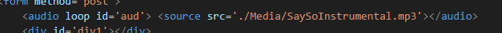
Contar Tempo no Sistema Proposto:
A contagem de tempo se dará através da interação de 2 funções Javascript contidas no script cronjs.js. A exibição será feita na área principal do site junto ao formulário de registro, garantindo que o usuário não perca nenhum elemento de vista.
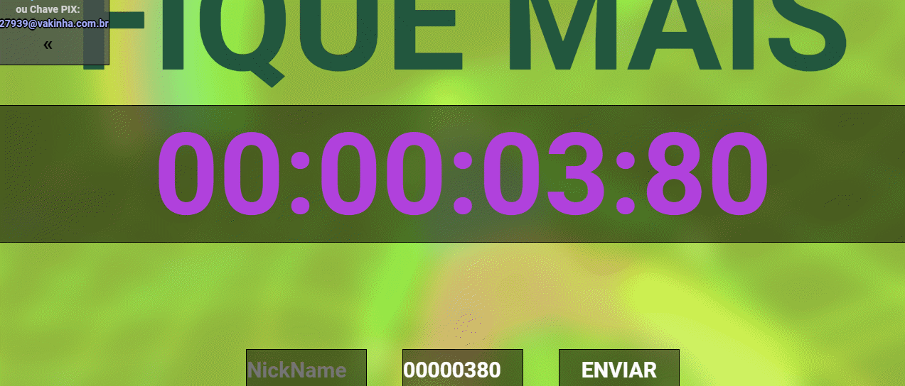
Registrar usuário no Sistema Proposto:
O registro de usuários se dará pelo arquivo index que fará as queries de update ao banco de dados sempre que receber dados pelo método POST do navegador.
Exibir os registros no Sistema Proposto:
Os 5 melhores tempo serão exibidos com os apelidos (nicknames) dos usuários que os enviarem através do formulário.
Para que o registro seja salvo ele deve seguir as seguintes exigências:
Ser diferente dos já registrados;
Não ser nulo ou feito de espaços em branco;
Se for igual a um já registrado, deve possuir pontuação (tempo) maior que a versão anterior de si mesmo.
Ter tempo maior que ao menos o menor registrado até então.
Vetar o registro de usuários com apelidos repetidos no Sistema Proposto:
Os usuários que desejarem enviar suas pontuações podem fazê-lo escrevendo seu apelido (nickname) e pressionando em seguida o botão “Enviar” do mesmo formulário, se portanto o apelido do usuário apresentar qualquer problema será então filtrado.
A coloração do texto pode mudar para sinalizar a disponibilidade do apelido digitado, onde:
Amarelo Significa Indisponível
Verde Significa Disponível
Vermelho Significa Problema no Sistema.
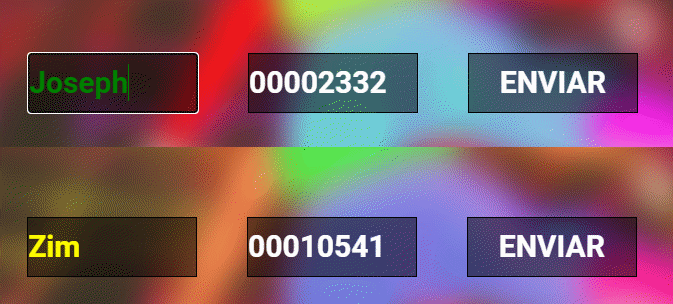
Contar de acessos no Sistema Proposto:
O Fique Mais conta um acesso espontâneamente toda vez que um usuário acessa a página.
Casos de Uso:
UC (Use Case):001
TÍTULO: Reproduzir Música
DESCRIÇÃO: O Sistema deverá reproduzir uma música quando for acionado pelo usuário.
ATORES: Usuário
PRE-CONDIÇÕES:
FLUXO DE EVENTOS: O usuário na página clica na interface; A música é ligada com a contagem de tempo.
PÓS CONDIÇÕES:
EXTENSÃO:
INCLUSÃO:
OBS:
DIAGRAMA:
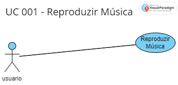
-------------------
Casos de Uso:
UC (Use Case):002
TÍTULO: Contar Tempo.
DESCRIÇÃO: O Sistema deverá reproduzir um cronômetro junto à música.
ATORES: Usuário
PRE-CONDIÇÕES:
FLUXO DE EVENTOS: O usuário na página clica na interface; A contagem de tempo é ligada junto a música.
PÓS CONDIÇÕES:
EXTENSÃO:
INCLUSÃO:
OBS:
DIAGRAMA:
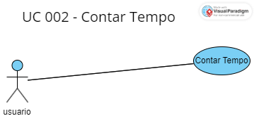
-------------------
UC (Use Case): 003
TÍTULO: Registrar Usuário
DESCRIÇÃO: O Sistema deverá registrar o usuário que preencher o formulário e passar mais tempo na gincana do que, pelo menos, o menor tempo registrado bem como excluir todo e qualquer tempo menor que o 5º (quinto) maior registrado.
ATORES: Usuário
PRE-CONDIÇÕES: O usuário deve estar com a música correndo e uma pontuação maior que a menor já registrada.
FLUXO DE EVENTOS: O usuário preenche o formulário de Nickname (apelido); O usuário clica no botão enviar.
PÓS CONDIÇÕES: O placar terá os 5 nomes com maiores tempos registrados.
EXTENSÃO:
INCLUSÃO:
OBS: O sistema manterá apenas os 5 maiores registros, portanto se o tempo de jogo não for grande o suficiente para superar ao menos um dos cinco já registrados ou ele não será registrado, no entanto se for o resultado anteriormente mais baixo agora será esquecido.
DIAGRAMA:
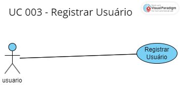
-------------------
UC (Use Case): 004
TÍTULO: Exibir os registros dos melhores pontuadores registrados.
DESCRIÇÃO: O Sistema exibirá de forma espontânea uma tabela ranqueando os melhores pontuadores que enviaram seus registros pelo formulário.
ATORES:
PRE-CONDIÇÕES:
FLUXO DE EVENTOS: O usuário acessa a página.
PÓS CONDIÇÕES: O usuário vê a tabela contendo os jogadores mais persistentes.
EXTENSÃO: UC002 – Registrar Usuário.
INCLUSÃO:
OBS:
DIAGRAMA:
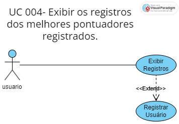
-------------------
UC (Use Case): 005
TÍTULO: Vetar o registro de usuários com apelidos repetidos.
DESCRIÇÃO: O Sistema impedirá o envio do formulário com apelidos já contidos no ranque.
ATORES: Usuário
PRE-CONDIÇÕES: O usuário insere um apelido já exibido na tabela ao fim da página.
FLUXO DE EVENTOS: O usuário insere o apelido já exibido na tabela ao fim da página; O botão “enviar” é bloqueado.
PÓS CONDIÇÕES:
EXTENSÃO:
INCLUSÃO:
OBS:
DIAGRAMA:
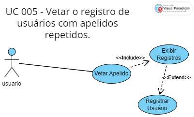
-------------------
UC (Use Case): 006
TÍTULO: Contar de acessos.
DESCRIÇÃO: O Sistema contabilizará em banco de dados toda vez que um acesso acontecer.
ATORES: Usuário
PRE-CONDIÇÕES:
FLUXO DE EVENTOS: O usuário acessa a página.
PÓS CONDIÇÕES: O contador de acessos conta mais um acesso.
EXTENSÃO:
INCLUSÃO:
OBS:
DIAGRAMA:
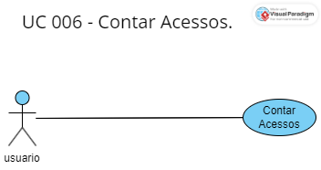
-------------------
Diagramas de Sequência:
UC (Use Case):001
TÍTULO: Reproduzir Música
DIAGRAMA:
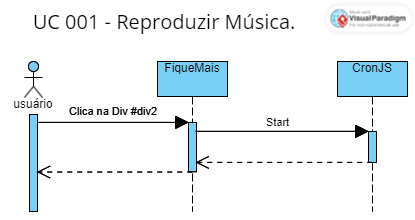
-------------------
Diagramas de Sequência:
UC (Use Case):002
TÍTULO: Contar Tempo.
DIAGRAMA:
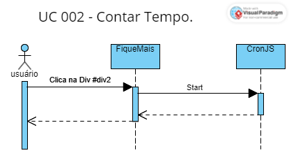
-------------------
UC (Use Case):003
TÍTULO: Registrar Usuário
DIAGRAMA:
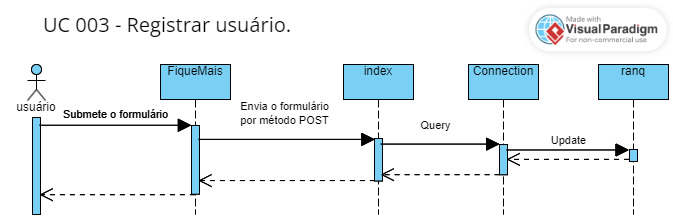
-------------------
UC (Use Case):004
TÍTULO: Exibir os registros dos melhores pontuadores registrados.
DIAGRAMA:
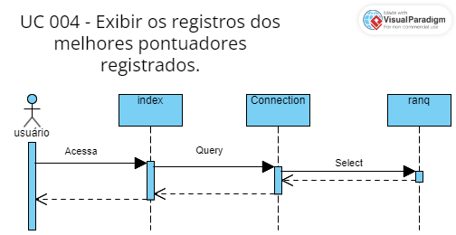
-------------------
UC (Use Case):005
TÍTULO: Vetar o registro de usuários com apelidos repetidos.
DIAGRAMA:
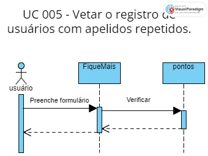
-------------------
UC (Use Case):006
TÍTULO: Contar Acessos.
DIAGRAMA:
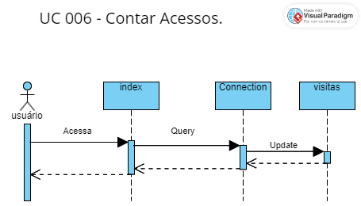
-------------------